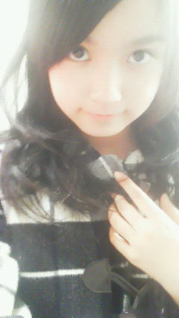

| 2012/01 17 Tue | ひめたん(*ゝω･*)ﾉその59 |
一期一会。
みなさん教えてくださってありがとうございました!
ね。素敵しょー♪
ひめたん
の小６の時の担任の先生はクラス結成初日にこう言いました。
「今日出会って明日死んでも悔いが残らないような付き合いをする。
これが俺のモットーだ。」
...。
11歳には意味がはーわからなかったです(-ω-)わら
でも先生と1年間過ごしてみてしっくりきたよー。
1回1回の出会いが大切ですよってことなんよね(^^)
1回の握手会。1回のイベント。1日のブログ。
後悔がないように全部全力で取り組むことが大事だぞ(`・・')!
って先生のメッセージを今でも忘れることはありませんω
あの時は、みなさんと会えることなんてこれっぽっちも想像してなかったもんなー
まともに地元のみんなとわいわい中学生してる姿しか考えられんかったもん!
うん。一期一会だ( o >ω< o )!
これからも「一期一会」を大切に頑張ります!
先生ー。みんなの受験が終わったら会いに行くからねー？
それまで待っとってねー ♪♪
 あの今日わたし誕生日なので
あの今日わたし誕生日なので
ひめたんに祝ってもらいたいです☆”
お誕生日おめでとうございますー!!!
何をして1日過ごしたんかな？何か特別なことしたんかなー？
素敵な1年になりますように(・v・)/!

幸せがいっぱい訪れるってひめたんが予言する!
『食後はコーヒーと紅茶がございますがどちらが宜しいですか？』
とレストランで言われたらひめたんはどっち？？
紅茶派かなー。
紅茶だったらミルクと砂糖をいっぱい飲める(^^)
コーヒーだったら牛乳いっぱいいれてコーヒー牛乳みたいになったら飲める(^^)
その前に「オレンジジュースってないですかね...？」って聞いてみる。
ひめたんって何の雑誌読んでるのー？
自分ではあんま買わないんだけど
妹がseventeenとかnon-no読んでるから、たまに借りるー♪
好きな果物とかありますか？？
酸っぱい系でなければなんでも好き(*^^*)

ひめたん、高校受験はいつ？
1月の終わりかなー
ってもうすぐぢゃ(・o・ノ)ノ!
てかさぁひめたん、随分ひなたんと仲良しなんだけど、
乃木坂メンバーでいちばん仲良しなのかな？
えーみんなと仲良しよお♪
いちばんなんて決めれんー。
中３トリオは相変わらず熱いですよ＼(∀)／
ひめたんのスクール時代のエピソードも聞きたいな！
スクール時代のエピソードを語りだしたら止まらないですよほんとに。
このブログでもちょいちょい話題になるからチェックしてみて下さいね★
いつか機会があったら特集組みたい。うん!
乃木坂のひめたんといえば！！？って言えるトレードマークありますか？
それが、固定の髪型はないし、決めゼリフはないし、なんだろ(・c_・)
とりあえずパフォーマンス見てほしいかなー。
トークもなかなか好き(*^^*)
すずかちゃん、ひめかちゃんと名前がカで終わるのは、
偶然ですか？それとも親がカが好きとかあるんですか？
姉さんに カ をつけたからひめもすずも カ がついちゃったらしいですー。
乃木坂ってどこが 本拠地なんですか?
乃木坂46ってくらいだから乃木坂になるんかなー？
実際乃木坂はいろんな思い出がありますよ!
結成オーディション、初めてのイベント、2012年初のイベント。
残念ながら乃木坂に行っても劇場はないのです('・ω・`)

ひめたん
{kind=link}